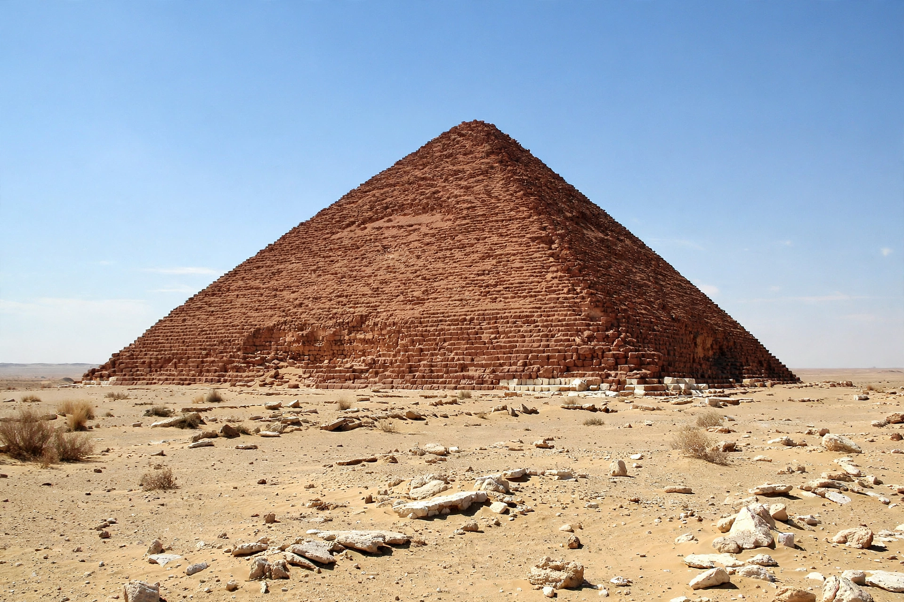

Red Pyramid
| Red Pyramid | |
|---|---|
 | |
| Location | Dahshur, Egypt |
| Built for | Pharaoh Sneferu (4th Dynasty) |
| Date | c. 2590 BC |
| Height | 104 m (341 ft) |
| Base | 220 m (722 ft) |
| Significance | First successful smooth-sided true pyramid |
The Red Pyramid, also called the North Pyramid, is the largest of the pyramids at Dahshur, south of Cairo, and the third-largest Egyptian pyramid overall. Built for Pharaoh Sneferu of the 4th Dynasty around 2590 BC, it is the first successful attempt at a smooth-sided "true" pyramid, following Sneferu's earlier experiments at Meidum and the Bent Pyramid. It takes its modern name from the reddish hue of its exposed limestone core.
Construction
The pyramid rises 104 metres from a base of about 220 metres, at a uniform, relatively shallow angle of about 43 degrees — apparently the lesson learned from the Bent Pyramid, whose angle was reduced mid-construction, probably after structural problems. Its core is built of local limestone blocks; the fine white Tura limestone casing was almost entirely stripped in the Middle Ages for building in Cairo, leaving the pinkish-red core visible. Sneferu's builders inscribed dated quarry marks naming regnal years, allowing scholars to estimate the construction sequence.
Interior
An entrance on the north face, about 28 metres up, leads to a descending corridor and a system of three chambers with corbelled ceilings of striking height, including the burial chamber. The chambers were empty when first entered in modern times; fragments of human remains found inside could not be securely identified as Sneferu's. A valley temple and causeway linked the pyramid to the Nile floodplain, and a smaller subsidiary pyramid stood to the south.
Context
The Red Pyramid, together with the Bent Pyramid, marks the transition from the step pyramid of Djoser to the classic pyramids of Giza built by Sneferu's son Khufu. The Dahshur necropolis is part of the UNESCO World Heritage listing for Memphis and its necropolis. The interior has been open to visitors since 2019.